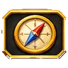
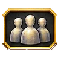
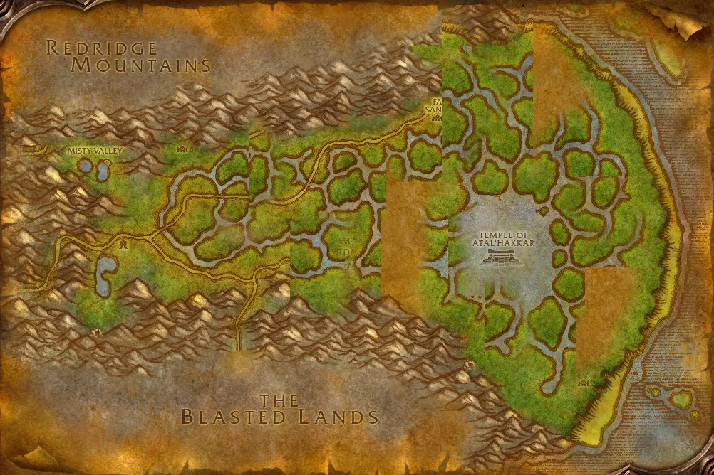

Accès

Entrée Marais des Chagrins 69.9, 53.5
5 joueurs · niveaux 50 à 55 9 quêtes · 5 boss
9 quêtes · 5 boss
Le point rouge marque l'entrée du donjon.
Toutes les zones sont sur notre carte interactive.
Le temple d'Atal'Hakkar, englouti dans le Marais des Chagrins, où les trolls veulent invoquer le dieu sanguinaire Hakkar.
📅 Mise à jour le 4 novembre 2026🛠 Patch 1.60.1.70753


Entrée Marais des Chagrins 69.9, 53.5
5 joueurs · niveaux 50 à 55 9 quêtes · 5 bossLe point rouge marque l'entrée du donjon.
Toutes les zones sont sur notre carte interactive.
| Objet | Type |
|---|---|
| Bottes Slitherscale | Pieds |
| Cape d'Aile-voile | Dos |
| Objet | Type |
|---|---|
| Griffe redoutable | Une main |
| Oeil de dragon | Cou |
| Cornes d'Eranikus | Tête |
| Ecusson de suprématie | Bouclier |
| Bâtonnet de corrosion | Distance |
| Dent d'Eranikus | Main droite |
| Objet | Type |
|---|---|
| Habit du prophète atal'ai | Torse |
| Kilt du prophète atal'ai | Jambes |
| Gants du prophète atal'ai | Mains |
| Objet | Type |
|---|---|
| Lame du Misérable | Main droite |
| Fracasseuse des damnés | Une main |
| Déchireuse des morts | Main droite |
| Objet | Type |
|---|---|
| Anneau d'Atal'alarion | Taille |
| Trucideuse | Deux mains |
| Brassards des eaux sombres | Poignets |
Butin d'après les données de WoW Classic : Forever a ajouté de nouveaux objets dans les donjons, la liste sera complétée en jeu. Seuls les objets de qualité inhabituelle et mieux sont listés. Passe la souris sur un objet pour voir ses caractéristiques (info-bulle Wowhead), ou clique pour ouvrir sa fiche.
Donnée par : Brohann Caskbelly (Hurlevent)
Récompense : Talisman de gardien
Donnée par : Fel'zerul (Marais des Chagrins)
Récompense : Talisman de gardien
Donnée par : Marvon Rivetseeker (Tanaris)
Donnée par : Sorcier-docteur Uzer'i (Féralas)
Donnée par : Marvon Rivetseeker (Tanaris)
Récompense : Urne hakkari
Donnée par : Exilé atal'ai (Les Hinterlands)
Récompense : Jambières de cavalier de la pluie · Heaume d'exil
Donnée par : Yeh'kinya (Tanaris)
Récompense : Heaume de l'Avant-garde · Miséricorde de force vitale · Diadème suprême
Donnée par : en ramassant Essence d'Eranikus
Récompense : Essence d'Eranikus enchaînée
Donnée par : Malfurion Stormrage (Le temple d'Atal'Hakkar)
Noms des quêtes, des PNJ et des objets d'après les données du jeu (Polestar, CC BY 4.0, et Factoruide/Questie).